The real truth about
Content Marketing Services
By Danny Ashton
The web is full of blog posts explaining how content marketing is going to change the world.
I’m also going to bet that your experience to date has been anything but magical. You have published blog posts, infographics, interactive tools... and it just got a dribble of traffic, maybe even the odd tweet.
I’m here to suggest that the promise of most “content marketing services” is out of whack with reality.
The premise of content marketing is that you produce content aimed at our audience at each stage of the buying cycle and turn potential consumers into advocates.
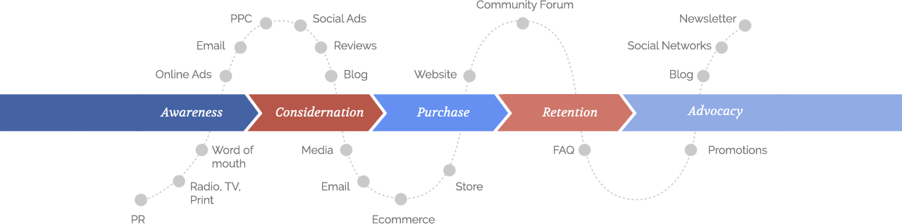
If you create the right content at the right stage, then you will start to see a return, right?
Here’s the deal:
In 2016, it’s not as simple as produce content = profit.
Let's talk about hype
Content marketing started to become popular around 2013.
Coincidentally the interest in content marketing came at the same time that interest dropped in something called link building:
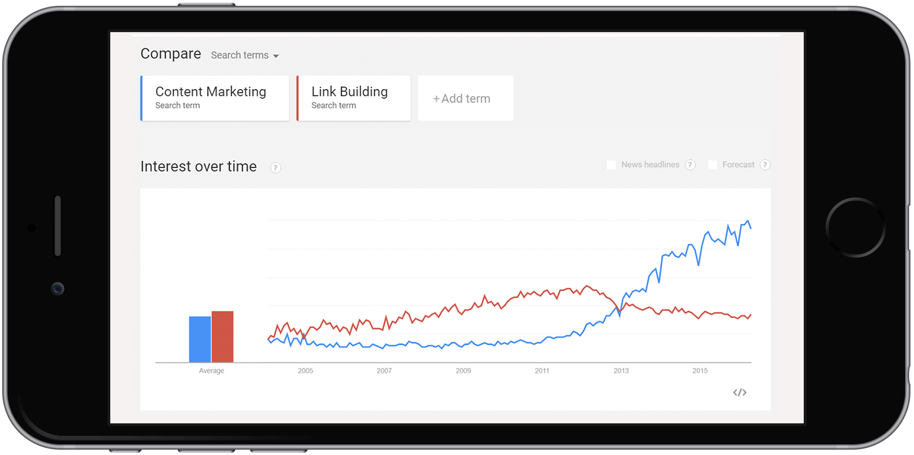
If you work in SEO, you will know this was no coincidence.
2013 was the year that Google started to roll out their biggest algorithm changes - Panda and Penguin. Penguin was created to stop manipulative link building practices that were popular across the SEO industry.
So what did the SEO Industry do? REBRAND!
In this rush to re-brand, we started to forget the fundamentals and jumped onto the content marketing hype waggon.
Overnight link building services became content marketing services.
SEO agencies became content marketing agencies.
SEO and links became a dirty word.
In this rush to re-brand, we started to forget the fundamentals and jumped onto the content marketing hype waggon.
We started pumping out content like there was no tomorrow:
In a recent analysis of 1 million articles by Buzzsumo, they found that 50% of the articles got eight shares or less.
Buzzsumo also studied 750,000 well-shared posts and they showed how over 50% of these had zero external links.
How can you get a return from content marketing in 2016?
While Google certainly targeted manipulative link building, links never stopped working.
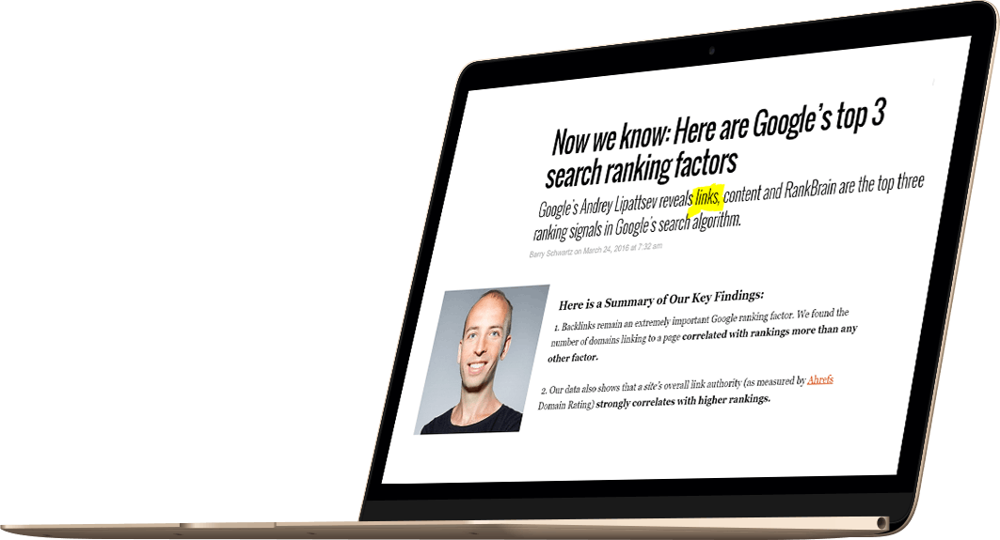
Unlike many agencies in our space, NeoMam doesn’t produce content at every stage at the buying cycle. We don’t because we are not yet experts at it.
But we are experts at producing quality, relevant content that attracts actual editorial coverage which means lots more linking root domains.
At NeoMam our content marketing process is simple:
Content
Editorially provided links
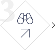
Increase in search visibility
Organic Revenue
Our content - infographics, visual assets, interactive tools and widgets - sit on just the awareness stage of the buying cycle.
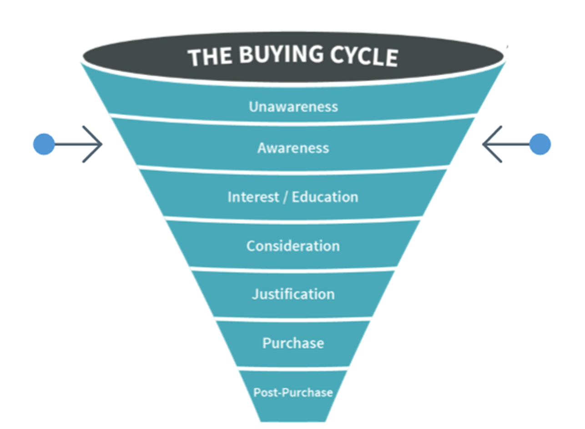
We can stick to this one stage because the Google Algorithm is still heavily weighted in favour of quality links from authoritative domains.
How does this look in the real world?
3 Examples Showcasing ‘The NeoMam Way’ In Practice
Example 1: Content aimed at the business audience
We use publicly available data from publishers to come up with a content idea for our financial comparison client:
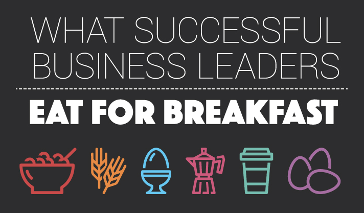
The key goal for this campaign is to create something that big publishers will want to feature.
When closing the campaign on 6th November 2015:
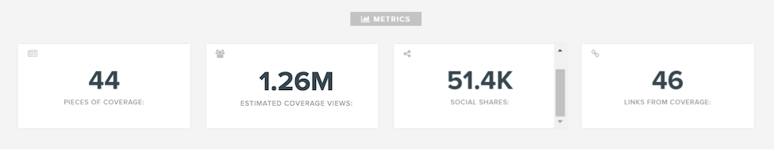
On May 6th 2016, six months after closing the campaign:
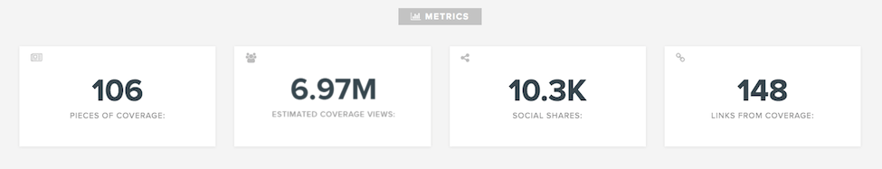
Combined with the correct SEO strategy these links will help to support long term search visibility:
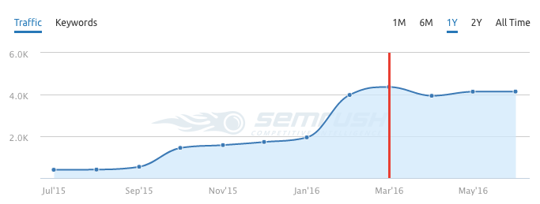
Example 2: Content targeting the leisure diving audience
Another example comes from a client in the diving industry who had just launched a website.
We produced 3 campaigns over a period of 6 months.
The first campaign was launched on the 4th of September 2015:
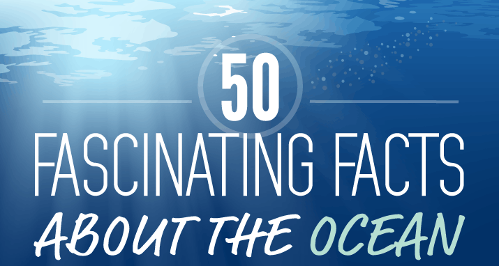
The client received their first report on 17th September 2015:
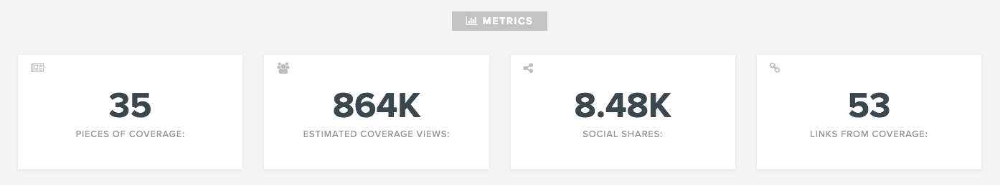
The second campaign was launched on the 3rd of November 2015:
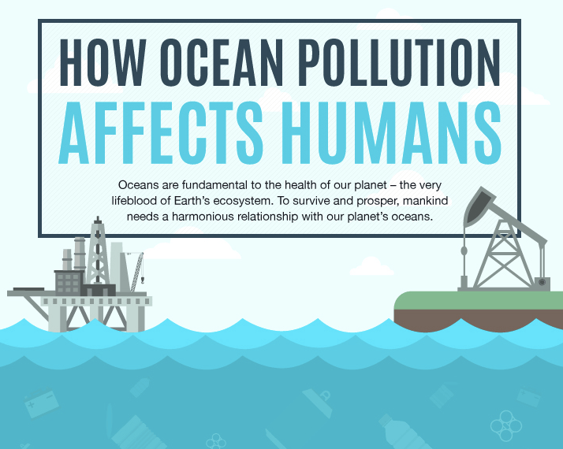
We closed the campaign on the 26th of November 2015 with great results:
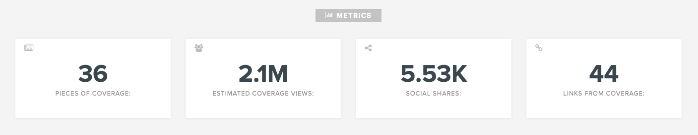
The last campaign of the 3-month retainer was launched on the 21st of January 2016:
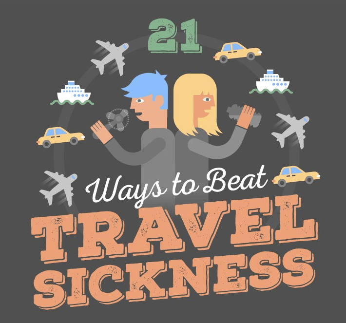
The campaign was closed on the 13th of February 2016:
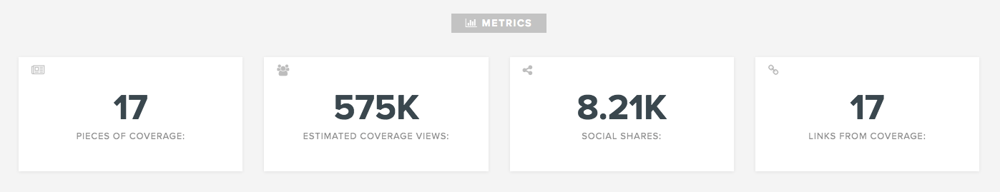
As of June 2016, these three are still the most linked to pages of the entire domain:
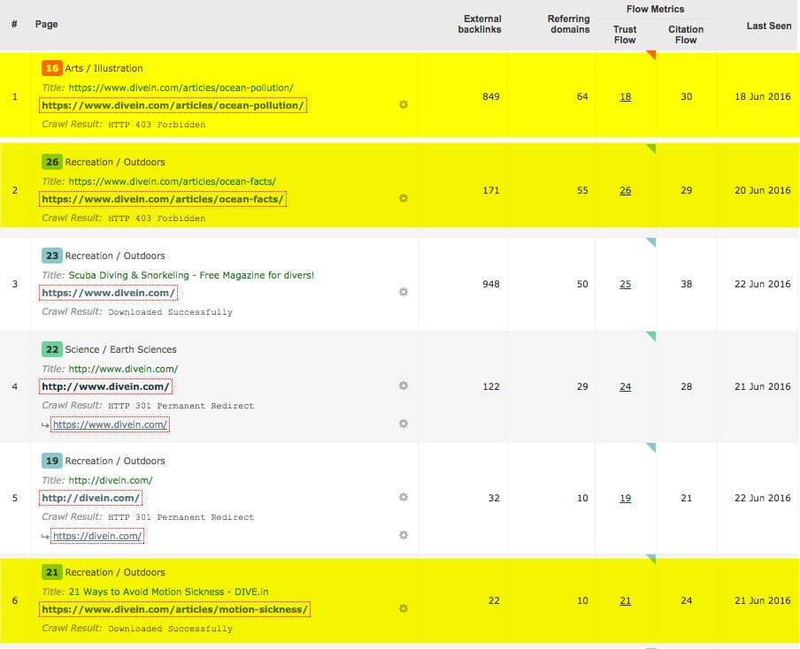
In this case we also see that our work supported long term search visibility for the site:
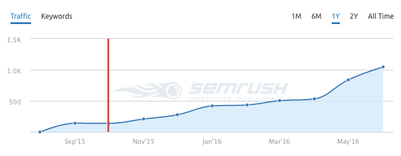
But there’s more:
Example 3: Content aimed at travel and interior design publishers
The last example comes from a peer-to-peer travel property rental company and brought us on board to work with two clear audiences: hosts and guests. We worked with this client for almost 2 years and launched 16 campaigns in 3 languages.
Don’t worry, we won’t go through all campaigns but let’s check out a few highlights of these 2 years.
The first campaign kickstarted on November 21st 2014:
The campaign ran until December 17th 2014:
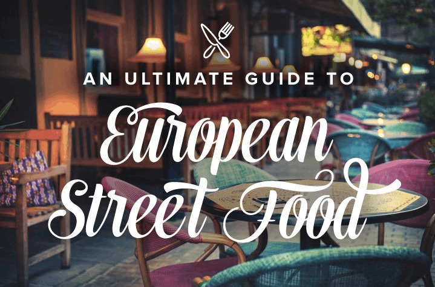
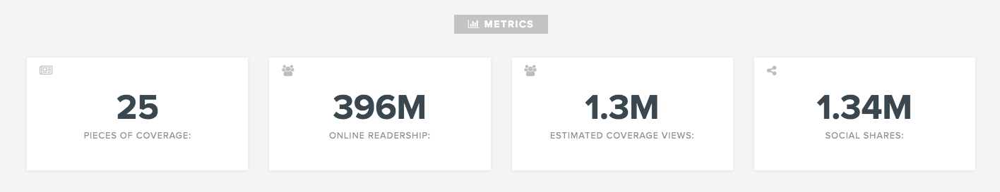
The 5th piece of content we launched went live on 5th October 2015:
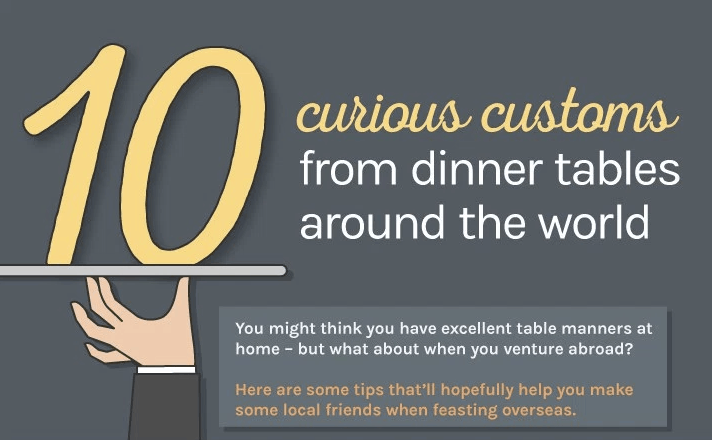
The report was sent to the client on 26th October 2015:
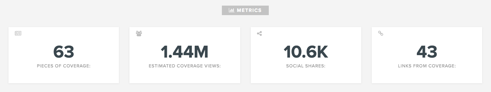
This brings us to the 9th campaign, which was launched on 29th November 2015:
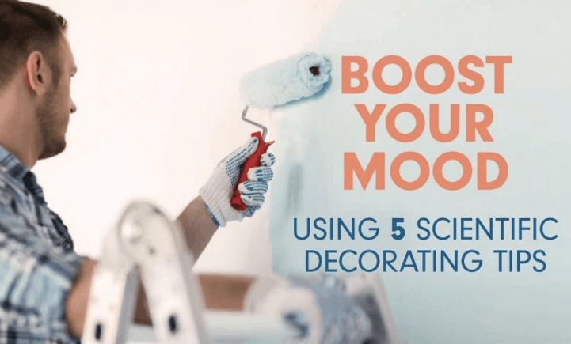
We closed this one on the 17th December 2015:
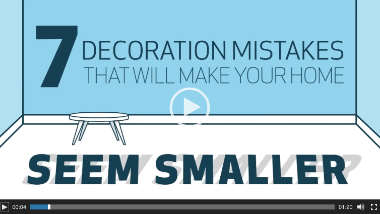
This campaign came to an end on the 31st May 2016:
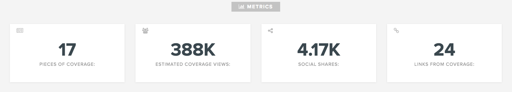
During these 2 years working with this client, we proved that consistent results combined with a strong SEO strategy helped support long term search visibility for sites across 3 languages (English, Italian and Spanish):
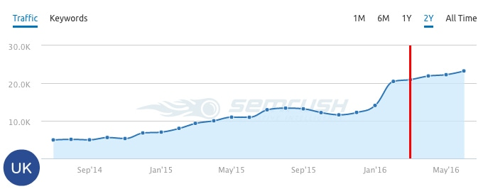
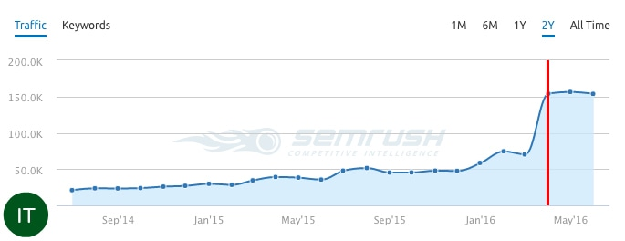
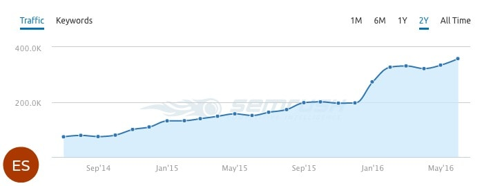
Why content marketing focused on the awareness stage
Right now this is the most efficient way to use content marketing services to achieve a return on investment.
There may be a future that involves Google caring less about links but that is certainly not here today in 2016.
If you are looking to get the most from your content agency, then make sure their primary KPI is links because this is what supports ROI today.
Our pricing includes a guarantee of the number of features we expect to achieve so agency and clients’ goals are aligned.
If we don't hit the required number, we are happy to do another campaign for free as we have learnt something we didn’t know before.
Not every campaign will be a success but as an agency, we carry our share of the risk.
If our type of content marketing service seems like it could be a good fit for your SEO team, then don’t hesitate to reach out to our team for a free consultation.